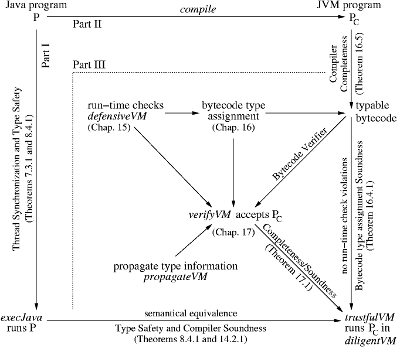

Responsible

The target readers are practitioners—programmers, implementors, standardizers, lecturers, students—who need for their work a complete, correct, and at the same time transparent definition, and an executable model, of the language, and of the virtual machine underlying its intended implementation. As a consequence, in our abstract and stepwise refined models for the language and the machine, we first of all try to directly and faithfully reflect, in a complete way, as far as possible without becoming inconsistent, and in an unambiguous yet for the human reader graspable way, the intuitions and design decisions which are expressed in the reference manuals and underly the current implementations of the language and of the machine. The rigorous framework we provide allows us to clarify some dark corners in the manuals and newly discovered bugs in the implementations. Since our framework is implementation independent, it can also be used for the specification and evaluation of variations or extensions of the language and of the virtual machine, and for the mathematical and the experimental study and comparison of present and future Java implementations. In particular, our componentwise specifications of Java and the JVM are amenable to mathematical and computer-assisted verification as well as to the experimental validation of practically important properties of Java programs when executed on the JVM. E.g., the analysis in the Jbook brings to light in what sense, and under which conditions, legal Java programs can be guaranteed to be correctly compiled, to successfully pass the bytecode verifier, and to be executed on the JVM correctly, i.e. faithfully reflecting the Java semantics and without violating any run-time checks (Main Theorem).
The diagram below illustrates how the three parts of the Jbook are connected to piecemeal establish that result. In Part I we define the semantics for Java programs, in Part II we define how they are compiled into Virtual Machine programs and how the obtained bytecode is executed on the trustfulVM, shown to faithfully reflect the Java semantics. In Part III we extend this machine to a defensiveVM which at run-time guards the trustful execution of every instruction by an appropriate type (etc.) correctness check. This check function is used to define a correct notion of bytecode type assignment, i.e. one which provably prevents type violations at run-time and admits a type assignment for each compiled Java program. Then we define how to propagate checked type assignments to single instructions, thus obtaining our verifier verifyVM which we can show to compute a bytecode type assignment if there is one. The combination of the trustfulVM and the verifyVM in the diligentVM establishes the Main Theorem. The introduction and the contents, and of course the Jbook, provide more detailed explanations.

| ETH Home | March 2001 Responsible |
|